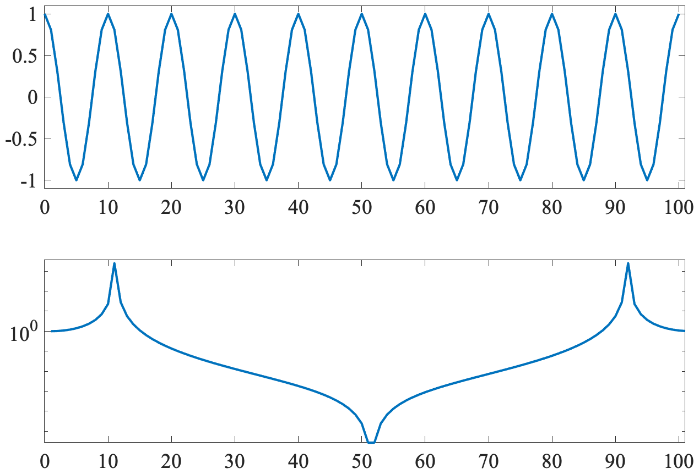

name: spectralanalysis class: center,middle, .toc[[✧](../index.html)] .title[Discrete to Continuous] <!-- class: left, .toc[[✧](../index.html)] #In-Class Assignments 1. In Matlab, let `$n=(0:N-1)'$` for some choice `$N$`. Form the array `$x=2*($`<tt>iseven</tt>`$(n)-1/2)$` and understand what this is giving you. Then take `$X=$`<tt>fft</tt>`$(x)$` for both `$N$` even and odd. 2. As a result of this excercise, at what position does the highest resolvable frequency appear in the Fourier transform? Know this in one-based counting, the position in the Matlab array, and in zero-based counting, which we are using for algebra. 4. Run <tt>psi=sleptap(length(x),M);</tt> followed by <tt>[f,S]=mspec(dt,x,psi)</tt> for `$M=4$.` Compute the variance by integrating the spectrum, not forgetting to multiply by the frequency interval. Compare to the variance computed directly from `$x$.` Do these match? 1. Run <tt>psi=sleptap(length(x),M);</tt> for `$M=3$.` Plot `$\psi$` on the left axis of a plot and the log of its <tt>fft</tt> on the right-hand side. --> --- class: left, .toc[[✧](../index.html)] # What We've Learned So Far -- (i) The sampling model `\[ z_n \equiv z(\Delta n),\quad\quad n=0,1,\ldots,N-1 \]` -- (ii) Euler's formula `\[ e^{i\omega t} = \cos(\omega t) + i \sin(\omega t) \]` -- (iii) The discrete Fourier transform `\[z_n=\frac{1}{N}\sum_{m=0}^{N-1} Z_m e^{i2\pi nm/N},\quad\quad\quad Z_m \equiv \sum_{n=0}^{N-1}z_n e^{-i2\pi nm /N} \]` -- (iv) `\[R (t,\tau)\equiv\mathrm{E}\{z(t+\tau)\,z^*(t)\}\]` `\[ S(\omega) \equiv \int_{-\infty}^\infty e^{-i \omega \tau} R(\tau) d\tau , \quad\quad R (\tau) = \frac{1}{2\pi}\int_{-\infty}^\infty e^{i \omega \tau} S(\omega) \, d\omega \]` --- class: left, .toc[[✧](../index.html)] # A Symmetric DFT Form The discrete Fourier transform equations, with `$f_m\equiv m/N$`, `\begin{equation}z_n=\frac{1}{N}\sum_{m=0}^{N-1} Z_m e^{i2\pi n f_m},\quad\quad\quad Z_m \equiv\sum_{m=0}^{N-1} z_m e^{-i2\pi n f_m} \end{equation}` can be written in form, for odd `$N$` `\begin{equation}z_n=\frac{1}{N}\sum_{m=-(N-1)/2}^{(N-1)/2} Z_m e^{i2\pi n f_m},\quad\quad\quad Z_m \equiv\sum_{n=-(N-1)/2}^{(N-1)/2} z_m e^{-i2\pi n f_m} \end{equation}` The inverse discrete Fourier transform, with `$f_m\equiv m/N$`, `\begin{equation}z_n=\frac{1}{N}\sum_{m=0}^{N-1} Z_m e^{i2\pi n f_m},\quad\quad\quad Z_m \equiv\sum_{m=0}^{N-1} z_m e^{-i2\pi n f_m} \end{equation}` can be written in the symmetric form `\begin{eqnarray} z_n&=& \frac{1}{N}\sum_{m=-(N/2-1)}^{N/2-1} Z_m e^{i2\pi n f_m} + Z_{N/2} (-1)^n & \quad\quad N~\mathrm{even}\\ z_n&=& \frac{1}{N}\sum_{m=-(N-1)/2}^{(N-1)/2} Z_m e^{i2\pi n f_m} & \quad\quad N~\mathrm{odd} \end{eqnarray}` where we *define* `$Z_m$` with `$m<0$` as `$Z_{m}\equiv Z_{N-m}$` in the latter two summations. Note the summations are now symmetric in `$m$`. --- class: left, .toc[[✧](../index.html)] # Limiting Forms of the DFT For reasons to become clear later, let's consider a deterministic (not stochastic) signal, denoted `$g(t)$`, sampled as `\[ g_n \equiv g(\Delta n),\quad\quad n=0,1,\ldots,N-1. \]` If `$N$` is odd then we can write `\[g_n =\frac{1}{N}\sum_{m=-(N-1)/2}^{(N-1)/2} G_m e^{i2\pi n f_m}\]` `\[g_n =\delta f\sum_{m=-(N-1)/2}^{(N-1)/2} G_m e^{i2\pi nf_m}\]` Let `$\tilde f_m\equiv \frac{m}{N\Delta }$` be the dimensional form of the `$m$`th Fourier frequency `\[g_n =\frac{1}{N}\sum_{m=-(N-1)/2}^{(N-1)/2} G_m e^{i2\pi n\Delta \tilde{f}_m}\]` Write the `$\delta f\equiv f^{\mathcal{R}}=\frac{1}{N\Delta}$` consider the following: Recall the Rayleigh and Nyquist frequencies `\[f^\mathcal{R} \equiv \frac{1}{N\Delta},\quad\quad\quad f^\mathcal{N}\equiv \frac{1}{2\Delta}\]` and consider the following: What happens as `$N$` tends to infinity with `$\Delta$` held fixed? -- What happens as the sample interval `$\Delta$` tends to zero with fixed duration `$T=N\Delta$`? --- class: center, .toc[[✧](../index.html)] #An Outstanding Mystery  The DFT of `$\cos (2\pi f n)$` with `$N=101$` is distributed. Why? --- class: left, .toc[[✧](../index.html)] #The Basic Idea The basic idea of spectral analysis is to break apart the variability of a time series into contributions from different frequencies. Genereally, this is done in the context of the assumption that the time series is a sample of some type of stochastic process. Thus, we need to review ideas such as the autocovariance function. As will be seen, the autocovariance function and the spectrum are two equivalent quantities containing the essential second-order statistical information of a stochastic signal. However, the spectrum tends to be more useful in practice, as well as easier to estimate. --- class: left, .toc[[✧](../index.html)] #The Autocovariance Imagine that our time series `$z_n$` is a *sample* of a real-world process `$z(t)$` that goes on forever. We can characterize `$z(t)$` *as if it were* a random process. Also, we assume that `$z(t)$` has a mean value of zero. The autocovariance function of `$z(t)$` is defined as `\[R (t,\tau)\equiv\mathrm{E}\{z(t+\tau)\,z^*(t)\}\]` where the “`$\mathrm{E}\{\}$`” denotes the *expectation operator*. This is an abstract kind of averaging that takes an average over all the other time series we *might* have observed at this location. This abstract set of possibilities is called the *ensemble*. The easiest way to understand the ensemble is with respect to repeated runs of a numerical model, e.g. repeating the same year multiple times. The conjugation is there in case `$z(t)$` is complex-valued. If it is real-valued, the conjugation does nothing and can be ignored. --- class: left, .toc[[✧](../index.html)] #Stationarity Note that the autocovariance is a function of *two* time variables: `\[R (t,\tau)\equiv\mathrm{E}\{z(t+\tau)\,z^*(t)\}.\]` The first, `$t$`, indicates where we are in time. The second, `$\tau$`, is an *offset* that we use to compare what is happening now, at time `$t$`, with what will happen some time later. If our time series is such that its autocovariance function *does not change* with time `$t$`, then the autocovariance can be simplified to `\[R (\tau)\equiv\mathrm{E}\{z(t+\tau)\,z^*(t)\}.\]` The process is then said to be *stationary*. More specifically, the process is said to be *second-order* stationary because the autocovariance is a second-order statistical quantity. --- class: left, .toc[[✧](../index.html)] #The Spectrum The Fourier transform of the autocovariance function, denoted `$S(\omega)$` `\[ S(\omega) \equiv \int_{-\infty}^\infty e^{-i \omega \tau} R(\tau) d\tau , \quad\quad R (\tau) = \frac{1}{2\pi}\int_{-\infty}^\infty e^{i \omega \tau} S(\omega) \, d\omega \]` is called the *spectrum*. For the moment, we will take the left equation as a *definition*. Since the spectrum is a Fourier transform pair with the autocovariance function, it contains equivalent information. <!--While both are essentially equivalent in that they capture the *same* second-order statistical information in different forms, the spectrum turns out to generally be far more illuminating, as well as easier to work with in practice.--> But the true autocovariance function is not observable unless we have (i) infinite time and (ii) access to an abstract set of other universes where things might have happened differently! Spectral analysis is about trying to *estimate* the “true” spectrum `$S(\omega)$` from a finite sample of `$z(t)$`. --- class: left, .toc[[✧](../index.html)] #What is the Spectrum? We have said that the spectrum is the Fourier transform of the autocovariance. But what is the spectrum itself? -- Isn't the spectrum about squared frequency-domain coefficients? -- Yes. -- So isn't the spectrum `$S_m\equiv \frac{1}{N}\left|Z_m\right|^2$`? -- No. This is an *estimate* of the spectrum called the periodogram. -- Can't we just write the time series in terms of its Fourier transform `\begin{equation} z(t) =\frac{1}{2\pi} \int_{-\infty}^{\infty} Z(\omega)\, e^{i\omega t} d\omega,\quad\quad Z(\omega)\equiv \int_{-\infty}^{\infty} z(t)\, e^{-i\omega t} d t \end{equation}` and then define the spectrum as `$S(\omega)\equiv \left|Z(\omega)\right|^2$`? -- No, sorry. -- It's true the spectrum is similar to `$S_m\equiv \frac{1}{N}\left|Z_m\right|^2$` and `$S(\omega)\equiv \left|Z(\omega)\right|^2$`. But to be precise about it will require new ideas. --- class: left, .toc[[✧](../index.html)] #Defining the Spectrum Earlier in this lecture we defined the spectrum as the Fourier transform of the autocovariance function. `\[ S(\omega) \equiv \int_{-\infty}^\infty e^{-i \omega \tau} R(\tau) d\tau , \quad\quad R (\tau) = \frac{1}{2\pi}\int_{-\infty}^\infty e^{i \omega \tau} S(\omega) \, d\omega \]` This is unsatisfactory because we know that the spectrum is related to the square of the Fourier transform of a time series. However, we intentionally defined it in this way in order to sidestep a technical difficulty, which we now address. --- class: left, .toc[[✧](../index.html)] #Continuous Time Fourier For processes defined on continuous time `$z(t)$`, we need to use the continuous-time, continuous frequency Fourier transform equations `\begin{equation} z(t) =\frac{1}{2\pi} \int_{-\infty}^{\infty} Z(\omega)\, e^{i\omega t} d\omega,\quad\quad Z(\omega)\equiv \int_{-\infty}^{\infty} z(t)\, e^{-i\omega t} d t \end{equation}` These differ from the discrete Fourier equations because *both* `$z(t)$` and `$Z(\omega)$` have values everywhere, not only at discrete intervals and perhaps not only over a certain time or frequency interval. For these equations to be valid, it is necessary for `$z(t)$` and `$Z(\omega)$` to satisfy some conditions. If both functions are absolutely integrable, `\begin{equation} \int_{-\infty}^{\infty} | z(t) | \, dt<\infty,\quad\quad\quad \int_{-\infty}^{\infty} |Z(\omega)|\, d \omega <\infty \end{equation}` then it can be shown that the Fourier transform equations hold. --- class: left, .toc[[✧](../index.html)] #A Wrinkle in Time Domain When dealing with time series `$z(t)$` that we consider as stochastic processes, we run into a wrinkle when we try to represent them in the Fourier domain. Our time series `$z(t)$` will be absolutely integrable if it is, say, a Gaussian shape, or a boxcar, or in general any time-localized signal with bounded (non-infinite) amplitude. This is a big problem with stochastic processes! We want to think of them as having a Fourier transform, but most processes of interest—such as white noise—will not be absolutely integrable. This means the Fourier transform `\begin{equation} Z(\omega)\neq \int_{-\infty}^{\infty} z(t)\, e^{-i\omega t} d t \end{equation}` is not even valid when `$z(t)$` is a stochastic process, because the integral cannot be associated with a specific finite value. --- class: left, .toc[[✧](../index.html)] #A Wrinkle in Time Domain If you remember from day one, we said that we believed the observed data represents *samples* of some real-world process, `\[z_n\equiv z(\Delta n), \quad\quad n=0,1,\ldots N-1\]` where we can conceptualize `$z(t)$` as a stochastic process that goes on forever in both directions. -- But because they are not absolutely integrable, **stochastic processes do not have Fourier transforms in the usual sense!** --- class: left, .toc[[✧](../index.html)] #Unwrinkle the Wrinkle Loosely speaking, the problem is that `$Z(\omega)$` would need to be infinite. There is a way around this, in which we replace the usual inverse Fourier transform with a relative known as the Cramér spectral representation theorem, shown at the right: `\begin{equation} z(t) =\frac{1}{2\pi} \int_{-\infty}^{\infty} Z(\omega)\, e^{i\omega t} d\omega,\quad\quad\quad \boxed{ z(t) =\frac{1}{2\pi} \int_{-\infty}^{\infty} e^{i\omega t} dZ(\omega)} \end{equation}` The crucial equation on the right is called the *Cramér spectral representation theorem*. Note a seemingly small change: `$Z(\omega)d\omega$` is replaced with `$dZ(\omega)$`. This lets us think of the stochastic process `$z(t)$` as being, *in a generalized sense*, the Fourier transform of a frequency-domain process `$dZ(\omega)$`, known as the *increment process.* <!--This actually reflects a *redefinition of integration*.--> --- class: left, .toc[[✧](../index.html)] #The Cramér Theorem Let's compare the two equations `\begin{equation} z(t) =\frac{1}{2\pi} \int_{-\infty}^{\infty} Z(\omega)\, e^{i\omega t} d\omega,\quad\quad\quad z(t) =\frac{1}{2\pi} \int_{-\infty}^{\infty} e^{i\omega t} dZ(\omega) \end{equation}` The equation on the left involves deterministic quantities, whereas the equation on the right involves stochastic quantities. More importantly, however, the very definition of an integral has changed! On the left is the usual Riemann integral defined as the limit of a sum as the step size goes to zero. On the right we have something somewhere different called a Riemann–Stieltjes integral involving a different limiting process. The essential idea is that we group the potentially non-finite value of `$Z(\omega)$` together with an infinitesimal `$d\omega$` in the integrand. This combination makes the integral manageable again. --- class: left, .toc[[✧](../index.html)] #The Cramér Theorem Fortunately, we rarely (probably never) need to worry about the technical details of the integration. The main point is that there is the *idea* of an inverse Fourier transform that works for stochastic processes, and that is called the Cramér spectral representation theorem. `\begin{equation} \boxed{z(t) =\frac{1}{2\pi} \int_{-\infty}^{\infty} e^{i\omega t} dZ(\omega)} \end{equation}` Like it relative for deterministic processes, this states again that `$z(t)$` can be built up from different oscillatory components. -- Note, for stochastic processes, we don't have a forward Fourier transform equation in the usual sense! `\begin{equation} dZ(\omega) \ne \int_{-\infty}^{\infty} e^{-i\omega t} z(t) dt \end{equation}` --- class: left, .toc[[✧](../index.html)] #Defining the Spectrum For a stationary random process `$z(t)$`, we can now re-define the spectrum as `\begin{equation} S(\omega)\delta(\omega-\nu)\, d\omega d\nu\equiv \frac{1}{2\pi}\mathrm{E}\left\{dZ(\omega) dZ^*(\nu)\right\} \end{equation}` directly in terms of `$dZ(\omega)$`, the frequency-domain increment process generating `$z(t)$` via the Cramér spectral representation theorem. This equation admittedly looks bizarre at first, with a delta function as a part of the definition, as well as a `$d\omega$` that we normally only see inside of an integral. However, its intuitive content is that for `$\omega=\nu$`, we have the value of `$S(\omega)$` essentially being set to `$\frac{1}{2\pi}\mathrm{E}\left\{|dZ(\omega) |^2\right\}$`, plus extra maths. Now we begin to see why the discrete Fourier spectrum can be estimated by the periodogram, `$\widehat S_m\equiv \frac{1}{N}\left|Z_m\right|^2$`. --- class: left, .toc[[✧](../index.html)] ##Spectrum and Autocovariance It follows from this new definition of the spectrum that `\[ \boxed{S(\omega) = \int_{-\infty}^\infty e^{-i \omega \tau} R(\tau) d\tau , \quad\quad R (\tau) = \frac{1}{2\pi}\int_{-\infty}^\infty e^{i \omega \tau} S(\omega) \, d\omega} \]` where the previous “`$\equiv$`” sign on the left is now an equals sign. This is another key foundation of spectral analysis. If one defines the autocovariance `$R(\tau)$` and spectrum `$S(\omega)$`, respectively, as `\begin{equation} R (\tau)\equiv\mathrm{E}\{z(t+\tau)\,z^*(t)\},\quad S(\omega)\delta(\omega-\nu)\, d\omega d\nu \equiv \frac{1}{2\pi}\mathrm{E}\left\{dZ(\omega) dZ^*(\nu)\right\} \end{equation}` then **the spectrum and the autocovariance form a Fourier transform pair.** We can write this in a shorthand notation as `\[R(\tau)\quad\Longleftrightarrow\quad S(\omega).\]` <!--That the spectrum is the Fourier transform of the autocovariance function is now a *consequence* of our new frequency-domain definition of the spectrum, rather than a definition itself.--> --- class: left, .toc[[✧](../index.html)] #Proof For the proof, we substitute the Cramér spectral representation theorem for `$z(t)$` in the definition of the autocovariance, leading to `\begin{multline} R (\tau)\equiv\mathrm{E}\{z(t+\tau)\,z^*(t)\}\\ =\mathrm{E}\left\{\left[\frac{1}{2\pi} \int_{-\infty}^{\infty} e^{i\omega (t+\tau)} dZ(\omega)\right]\left[\frac{1}{2\pi} \int_{-\infty}^{\infty} e^{-i\nu t} dZ^*(\nu)\right]\right\}\\ =\frac{1}{\left(2\pi\right)^2} \int_{-\infty}^{\infty}\int_{-\infty}^{\infty} e^{i(\omega-\nu) t+i\omega\tau} \, \mathrm{E}\left\{ dZ(\omega) \,dZ^*(\nu)\right\}. \end{multline}` Now inserting `$S(\omega)\delta(\omega-\nu)\, d\omega d\nu\equiv \frac{1}{2\pi}\mathrm{E}\left\{dZ(\omega) dZ^*(\nu)\right\}$` gives `\begin{multline} R (\tau) =\frac{1}{2\pi} \int_{-\infty}^{\infty}\int_{-\infty}^{\infty} e^{i(\omega-\nu) t+i\omega\tau} \, S(\omega)\delta(\omega-\nu)\, d\omega \,d\nu\\ =\frac{1}{2\pi} \int_{-\infty}^{\infty} e^{i\omega\tau} \,S(\omega) d\omega \end{multline}` as claimed, using the fundamental property of a delta function. --- class: left, .toc[[✧](../index.html)] #Spectral Estimates Recall from yesterday the Fourier pair relationships: `\[ z_n=\frac{1}{N}\sum_{m=0}^{N-1} Z_m e^{i2\pi m n/N},\quad\quad\quad Z_m \equiv \sum_{n=0}^{N-1}Z_n e^{-i2\pi m n/N}. \]` It can be shown (but not now) that the spectrum can be estimated simply by taking the modulus squared of the Fourier coefficients, `\[\widehat S_m\equiv \frac{1}{N}\left|Z_m\right|^2,\quad\quad n=0, 1, 2, \ldots,(N-1).\]` This quantity is known as the *periodogram*. As we shall see, the periodogram is *not* the spectrum! It is an *estimate* of the spectrum—and generally speaking, a very poor one. It is also said to be the *naive* spectral estimate, meaning it is the spectral estimate that you get if you don't know that there is something better. --- class: left, .toc[[✧](../index.html)] #Three Problems The periodogram estimate of the spectrum suffers from three problems: 1. *Aliasing.* This is due to the fact that a continuous-time process is *sampled*, `$z_n\equiv z(n\Delta)$`. 3. *Blurring.* Values of the spectrum bleed out to affect other frequencies. We will understand this in a later lecture. <!-- This is a consquence of *truncating* the process `$z(t)$`, only observing it over a finite time window of duration `$N\Delta$`.--> 2. *Variance.* This is due to the randomness of the underlying process `$z(t)$`. The problem of aliasing one is more or less stuck with, but the other two problems can be greatly improved by a more sophisticated choice of spectral estimate. To minimize aliasing, you should make sure your experiment has an adequate sample rate! <!--, from `$t=0$` to `$t=(N-1)\Delta$`.--> Blurring is a particularly difficult problem because it doesn't reduce with averaging. This problem is also called *bias* or *leakage*. --- class: left, .toc[[✧](../index.html)] #Aliasing <!--Any spectral estimate is distorted from `$S(\omega)$` in two important ways. The first is through *aliasing*.--> Imagine that our time series extends at discrete times into the infinite past and future, that is, we have `$z_n=z(n\Delta)$` for *all* positive and negative integers `$n$`, but not in between those times. In this case, it turns out that the spectrum can still be considered a function of continuous frequency `$\omega$`, but *only* up to the Nyquist at `$\omega=\pm \pi/\Delta$`. (Recall that `$f=1/(2\Delta)$` is the same as `$\omega= \pi/\Delta$`.) It can be shown (but not right now) that the spectrum then becomes `\[\sum_{p=-\infty}^{\infty }S\left(\omega + p \frac{2\pi }{\Delta} \right) \equiv S^{\Delta}(\omega)\]` which states that all frequencies higher or lower than `$\omega=\pm \pi/\Delta$` are *wrapped around* to the next resolved frequency. <!--The *aliased spectrum* `$ S^{\Delta}(\omega)$` is the best you can hope for from finitely sample data, even if you are very patient.--> --- class: left, .toc[[✧](../index.html)] #Aliasing Illustration <center><img style="width:45%" src="../../figures/univariatealiasing.png"></center> --- class: center, .toc[[✧](../index.html)] #Variance Illustration <img style="width:100%;margin-top:-0.7em;margin-bottom:-0.8em" src="../../figures/bettyperiodogram.png"> The main problem here is variance of the periodogram spectral estimate. Most meaningful structure in the spectrum is obscured. --- class: center, .toc[[✧](../index.html)] #Reducing Variance <img style="width:100%;margin-top:-0.7em;margin-bottom:-0.8em" src="../../figures/bettyspectra.png"> Variance can be mitigated by a spectral estimate that incorporates some type of *frequency-domain averaging*, as is the case here. --- class: center, .toc[[✧](../index.html)] #Model Trajectories <img style="width:100%" src="../../figures/noninertialtrajectories.png"> Particle trajectories in a model of baroclinic turbulence on a `$\beta$` plane, from a simulation by E. Danioux. --- class: center, .toc[[✧](../index.html)] #The Periodogram <img style="width:100%" src="../../figures/noninertialperiodogram.png"> Rotary spectra estimated using the periodogram. Red line is a characteristic frequency that we can ignore. --- class: center, .toc[[✧](../index.html)] #Blurring Illustation <img style="width:100%" src="../../figures/noninertialadaptive.png"> Periodgram vs. adaptive multitaper estimate. We will see that the periodogram is dominated by an artifact called *spectral blurring*. --- class: left, .toc[[✧](../index.html)] #Conclusion The spectrum is the fundamental second-order description of a stochastic time series. Loosely speaking, it's the expected value of the square of the Fourier coefficients. But defining this precisely is a bit of mathematical challenge. There are three challenges in estimating it, the details of which we'll understand shortly. <!--Three particular challenges are: (i) aliasing, due to the discrete sample interval; (ii) spectral blurring, due to the truncation to finite duration; and (iii) variance, due to stochastic variability.--> <!-- 1. Use Euler's formula to write down `$e^{i\omega_o t}+e^{-i\omega_o t}$` and `$e^{i\omega_o t}-e^{-i\omega_o t}$`. 1. Draw the Fourier transforms of `$e^{i\omega_o t}$` and `$e^{-i\omega_o t}$`. 1. Draw the Fourier transforms of `$\cos(\omega_o t)$` and `$\sin(\omega_o t)$`. 1. Write down the form of the inverse Fourier transform equation, `$x(t)=$`. What does a shift in time correspond to in the frequency domain? 1. Write down the form of the forward Fourier transform equation, `$X(\omega)=$`. What does a shift in frequency correspond to in the time domain? 1. Draw a rectangle or boxcar function of time and its Fourier transform, to the best of your memory. Label the zero frequency. 2. Repeat #2 but for a boxcar multiplied by `$e^{i\omega_o t}$`. 2. Repeat #2 but for a boxcar multiplied by `$\cos(\omega_o t)$`.-->